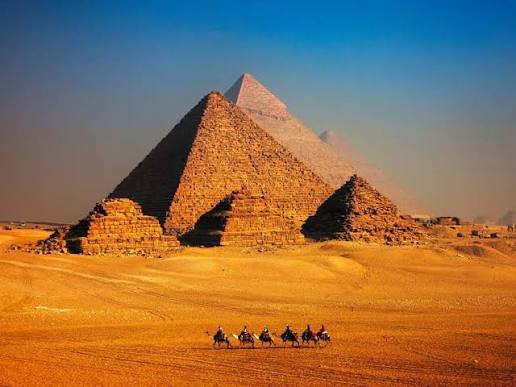
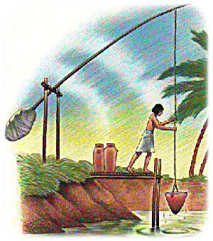
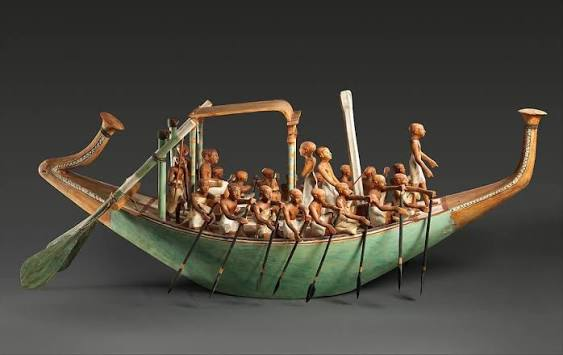
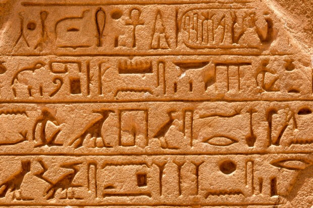
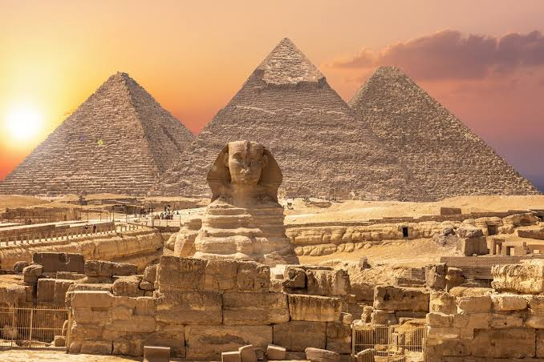

Sa Agos ng Ilog Nile
Tuklasin ang pamahalaan, relihiyon, lipunan, kalakalan, pagsulat, agham, teknolohiya, arkitektura, at sining ng sinaunang Ehipto.
Inihanda nina: Chelson Prinz Pution, Caleb Nillos, Hannah Eguid, Rosebelle Rodriguez, Reian James Balasan, Franz Edrianne Ruales — Baitang 8, Blessed Josephine
Ang Sinaunang Ehipto ay isang kabihasnang umunlad sa paligid ng Ilog Nile at nag-iwan ng pambihirang pamana sa buong daigdig. Malapit na nakaugnay ang kanilang buhay sa ilog — pinagkukunan ito ng tubig, pagkain, daanan ng kalakalan, at pinagmulan ng kanilang kabuhayan.
Mahalaga rin sa kanila ang relihiyon at pamahalaan. Naniniwala sila sa maraming diyos at sa kabilang buhay, kaya naging bahagi ng kanilang kaugalian ang pag-iingat sa labi ng mga yumao at pagtatayo ng mga dakilang libingan at templo.
Ang Ilog Nile ay tinaguriang “Ilog na Buhay” ng Ehipto. Ito ang naging puso ng kanilang pamumuhay — mula sa tubig na panggatong sa sakahan hanggang sa daanan ng sasakyan.
Larawan: Ang Ilog Nile — pinagmumulan ng buhay sa Ehipto
Pagsasaka ang pangunahing ikinabubuhay. Itinanim nila ang sebada, trigo, gulay, at millet. Ang pag-apaw ng tubig ng Nile ay nag-iwan ng mayamang lupa na naging dahilan ng masaganang ani.

Larawan: Sinaunang paraan ng irigasyon at paggamit ng shaduf sa pagsasaka
Gumawa sila ng mga sasakyang pandagat mula sa halamang papyrus. Ginamit ito sa paglalakbay sa ilog at pakikipagkalakalan sa mga karatig-lugar. Natuto rin sila ng paggawa ng palayok, paghahabi, pag-ukit sa metal at kahoy, at paggawa ng salamin.

Larawan: Bangkang gawa sa papyrus na ginamit sa paglalakbay at kalakalan
Ang kanilang paniniwala ay kaakibat ng pamamahala — tinawag itong Teokrasya. Ang Paraon ay itinuturing na buhay na diyos na nagtataglay ng katangian nina Osiris at Horus.
Dahil sa paniniwalang babalik ang kaluluwa sa katawan, iningatan at inipepreserba nila ang labi ng mga yumao. Inilalagay ang mummified na katawan sa mga libingan na may kasamang mga kagamitan, pagkain, at alahas para sa kabilang buhay.
Ang lipunan ay hugis-piramide — may malinaw na pagkakaiba sa katayuan, tungkulin, at pribilehiyo.

Larawan: Mga Sagradong Kasulatan at ang Rosetta Stone — susi sa pag-unawa sa kanilang wika

Larawan: Dakilang arkitektura — tanda ng kanilang kasanayan at paniniwala
Ang Ilog Nile ang naging puso ng kabihasnang Ehipsiyo. Ito ang nagbigay ng tubig, matabang lupa, at daanan ng kalakalan na nagpahintulot sa kanila na umunlad sa gitna ng disyerto. Pagsasaka ang kanilang pangunahing ikinabubuhay, ngunit natuto rin silang gumawa ng mga sasakyang pandagat, makipagpalitan ng produkto, at matuto ng iba’t ibang kasanayan mula sa ibang bayan.
Ang kanilang pamahalaan at relihiyon ay iisa — ang Paraon ay pinuno at itinuturing na diyos din. Ang paniniwala sa kabilang buhay ay humubog sa kanilang buong kultura: mula sa mummification, pagtatayo ng mga dambuhalang libingan, hanggang sa mga kagamitang inilalagay kasama ng yumao. Ipinapakita nito na hindi lamang sila nabuhay para sa kasalukuyan kundi naghanda rin para sa buhay pagkatapos ng kamatayan.
Sa larangan ng kaalaman, nag-iwan sila ng mahahalagang ambag: sistema ng pagsulat na hieroglyphics, kalendaryong may 365 araw, kaalaman sa medisina at matematika, at mga dakilang estruktura na hanggang ngayon ay hinahangaan ng buong daigdig. Ang kanilang lipunan ay maayos na nakaayos — mula sa banal na Paraon hanggang sa mga manggagawa — na nagtulungan upang makabuo ng isang matatag at maunlad na kabihasnan.
Ang sinaunang Ehipto ay nagpapakita kung paano nagtagpo ang kapaligiran, pananampalataya, pamamahala, kabuhayan, at kaalaman upang makabuo ng isang lipunang may natatanging kultura at pangmatagalang pamana. Ipinatutunay nito na kapag ginamit ng tao ang kanyang kapaligiran nang may talino, pinag-isa ng matibay na paniniwala at maayos na pamamahala, kayang makabuo ng dakilang bagay na mananatili sa loob ng libo-libong taon.
“Ang pamana ng sinaunang Ehipto ay makikita sa kanilang pagsulat, kaalaman, teknolohiya, sining, at malalaking estruktura.” — Hindi lamang ito mga bato at simbolo; ito ay patunay ng katalinuhan, pananalig, at pagkakaisa ng isang bayan na nag-iwan ng liwanag sa kasaysayan ng daigdig. Maaari nating tularan ang kanilang kasipagan, pagmamahal sa kaalaman, at pananalig sa Diyos — mga katangiang nananatiling mahalaga kahit sa panahon ngayon.